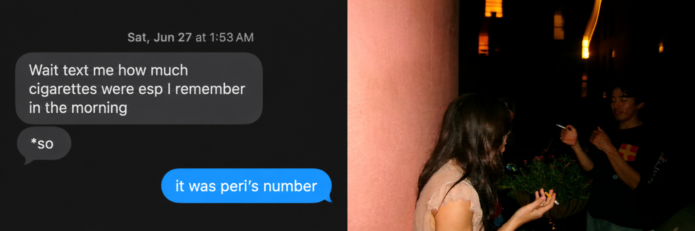
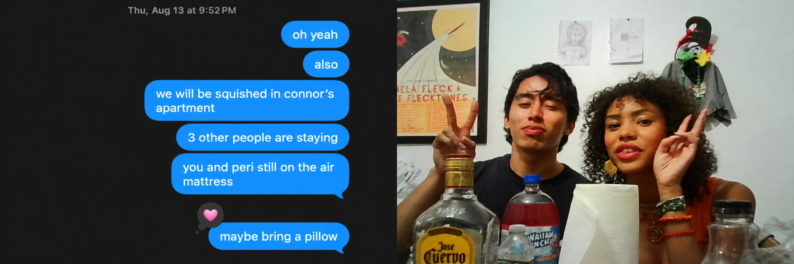
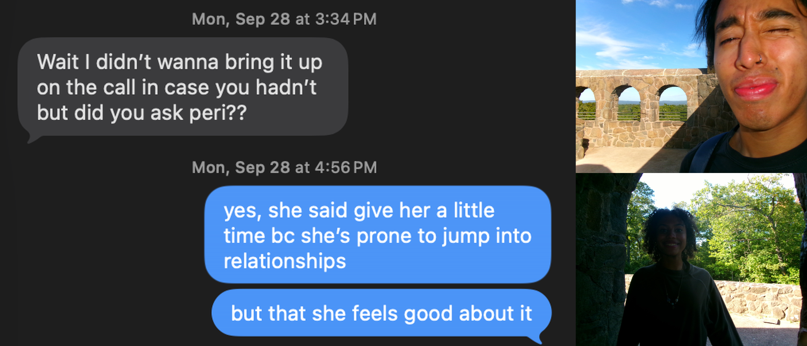
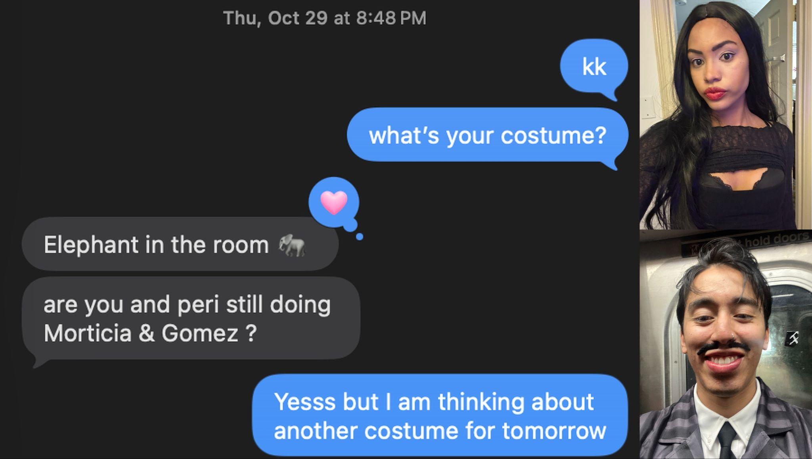

To Peri,
One month together, and boy, did it feel like twelve! I’m partly kidding, probably because of how close we’ve gotten in this short month. I never get tired of learning more about you, the good and the jealousy-inducing things alike. I want you, the right way: as you are.
A kindness known by those close to you. Like eating McDonald’s just because you thought it was my favorite. Such strong integrity, especially when you answer my questions, the normal and outrageous ones alike. And what tenacity! Working towards a job and landing one, I could not be more proud. The values you exercise, both inside and outside of our relationship, are but a piece of why you are always on my mind.
You motivate me to work harder, to chase success, and to grit through it all. I want to learn a thousand more recipes and feed you twice that much. I want to wake you up with a buffet of breakfast foods, not just omelets and kombucha. I want to strengthen my body every day, for you to hold on to whenever you need. I want to live healthily with you, hike East Rock more, and walk through all the seasons, because I need you around as long as possible.
Now for a visual cruise, with our cousin steering the boat. Here are text messages and accompanying photos chronicling our relationship:




To end, I want you to know how much I’ve grown to care for you, if that wasn’t clear. Let’s continue going on adventures, cooking and baking together, watching old films, and everything in between. I miss you and happy one month.